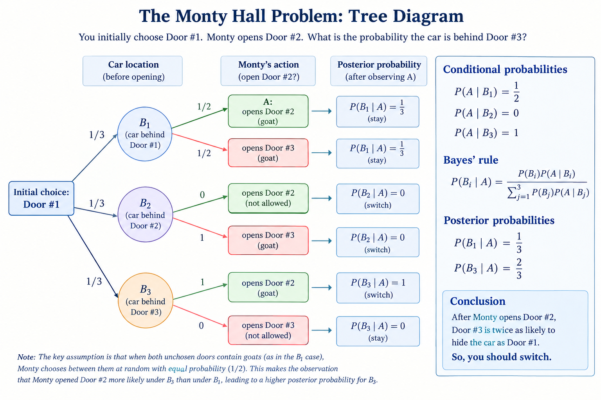

65 Lecture 30.1: Conditional Probability
65.1 Foundations of Conditional Probability
Given a underlying probability space \((\Omega, \mathcal{F}, \mathbb{P})\) and an event \(B \in \mathcal{F}\) with non-zero probability (\(\mathbb{P}(B) > 0\)), we can define a updated probability measure \(\mathbb{P}_B: \mathcal{F} \to [0, 1]\).
Definition 65.1 (Conditional Probability Measure) For any event \(A \in \mathcal{F}\), the conditional probability of \(A\) given \(B\) is defined as:
\[\mathbb{P}[A \mid B] = \mathbb{P}_B(A) := \frac{\mathbb{P}(A \cap B)}{\mathbb{P}(B)}.\]
- Prior Probability: \(\mathbb{P}(A)\) represents the baseline probability of event \(A\) before observing any auxiliary information.
- Posterior Probability: \(\mathbb{P}_B(A) = \mathbb{P}[A \mid B]\) represents the updated probability of event \(A\) after observing that event \(B\) has occurred.
65.2 The Law of Total Probability
When the sample space \(\Omega\) can be decomposed into mutually exclusive and exhaustive events, we can evaluate global probabilities by combining conditional measures.
Theorem 65.1 (Law of Total Probability (LTP)) Let \(\{B_1, B_2, \dots, B_n\}\) be a partition of \(\Omega\) such that:
- \(B_i \cap B_j = \emptyset\) for all \(i \neq j\),
- \(\bigcup_{j=1}^n B_j = \Omega\),
- \(\mathbb{P}(B_j) > 0\) for all \(j = 1, \dots, n\).
Then for any event \(A \in \mathcal{F}\):
\[\mathbb{P}(A) = \sum_{j=1}^n \mathbb{P}(A \cap B_j) = \sum_{j=1}^n \mathbb{P}(B_j) \, \mathbb{P}(A \mid B_j).\]
Example 65.1 (Unfair Coin Collection) Suppose you find a coin on the street selected from a mixed population:
- Fair Coins (\(B_1\)): \(90\%\) of coins (\(\mathbb{P}(B_1) = 0.90\)), with \(\mathbb{P}(\text{Heads} \mid B_1) = 0.50\).
- Biased Coins Type 1 (\(B_2\)): \(9\%\) of coins (\(\mathbb{P}(B_2) = 0.09\)), with \(\mathbb{P}(\text{Heads} \mid B_2) = 0.60\).
- Biased Coins Type 2 (\(B_3\)): \(1\%\) of coins (\(\mathbb{P}(B_3) = 0.01\)), with \(\mathbb{P}(\text{Heads} \mid B_3) = 0.80\).
What is the overall probability \(P(H)\) that a randomly selected coin turns up heads?
Applying the Law of Total Probability:
\[\begin{aligned} \mathbb{P}(H) &= \mathbb{P}(B_1)\mathbb{P}(H \mid B_1) + \mathbb{P}(B_2)\mathbb{P}(H \mid B_2) + \mathbb{P}(B_3)\mathbb{P}(H \mid B_3) \\ &= (0.90)(0.50) + (0.09)(0.60) + (0.01)(0.80) \\ &= 0.450 + 0.054 + 0.008 = 0.512 \quad (51.2\%). \end{aligned}\]
65.3 Bayes’ Rule and Inversion of Conditioning
Bayes’ Rule provides the link between conditional probabilities \(\mathbb{P}(A \mid B)\) and \(\mathbb{P}(B \mid A)\).
Theorem 65.2 (Bayes’ Rule) Let \(\{B_1, B_2, \dots, B_n\}\) partition the sample space \(\Omega\). For any event \(A\) with \(\mathbb{P}(A) > 0\), the posterior probability of a specific partition element \(B_k\) given \(A\) is:
\[\mathbb{P}(B_k \mid A) = \frac{\mathbb{P}(A \cap B_k)}{\mathbb{P}(A)} = \frac{\mathbb{P}(A \mid B_k) \, \mathbb{P}(B_k)}{\sum_{j=1}^n \mathbb{P}(A \mid B_j) \, \mathbb{P}(B_j)}.\]
Example 65.2 (Updating the Coin Beliefs) Given that the picked coin comes up heads on a single toss, what is the probability that it is the heavily biased coin (\(B_3\))?
\[\mathbb{P}(B_3 \mid H) = \frac{\mathbb{P}(H \mid B_3) \, \mathbb{P}(B_3)}{\mathbb{P}(H)} = \frac{(0.80)(0.01)}{0.512} = \frac{0.008}{0.512} \approx 0.0156. \]
Notice that even though \(\mathbb{P}(H \mid B_3) = 80\%\), we have \(\mathbb{P}(B_3 \mid H) \neq 80\%\) due to the low prior probability of picking \(B_3\).
Example 65.3 (Demographic Inversion (Billionaires)) According to Forbes data (April 2019), there are \(2208\) billionaires globally, of whom \(1964\) are men.
- Let \(B\) be the event of being a billionaire, and \(M\) be the event of being male.
- \(\mathbb{P}(M \mid B) = \frac{1964}{2208} \approx 88.95\%\).
- Crucially, \(\mathbb{P}(M \mid B) \neq \mathbb{P}(B \mid M)\), as \(\mathbb{P}(B \mid M)\) represents the probability that a randomly chosen male is a billionaire (which is near zero).
Example 65.4 (Epidemiological Fallacy (Base Rate Neglect)) Consider a medical diagnostic test for HIV. Let \(H\) be the event that an individual has HIV, and \(T\) be the event that the test result is positive, with the following specifications:
- Accuracy: \(99\%\) sensitivity (\(\mathbb{P}(T \mid H) = 0.99\)) and \(99\%\) specificity (\(\mathbb{P}(T^c \mid H^c) = 0.99\), implying a false-positive rate \(\mathbb{P}(T \mid H^c) = 0.01\)).
- Prevalence (Base Rate): \(0.33\%\) of the population has HIV (\(\mathbb{P}(H) = 0.0033\)).
If an individual tests positive (\(T\)), what is the probability that they actually have HIV (\(\mathbb{P}(H \mid T)\))?
\[ \begin{aligned} \mathbb{P}(H \mid T) &= \frac{\mathbb{P}(T \mid H) \mathbb{P}(H)}{\mathbb{P}(T \mid H)\mathbb{P}(H) + \mathbb{P}(T \mid H^c)\mathbb{P}(H^c)} \\ &= \frac{(0.99)(0.0033)}{(0.99)(0.0033) + (0.01)(1 - 0.0033)} \\ &= \frac{0.003267}{0.003267 + 0.009967} \\ &= \frac{0.003267}{0.013234} \approx 24.69\%. \end{aligned} \]
Even though the false-positive rate is only \(1\%\), the healthy population \(H^c\) is so much larger than \(H\) (\(99.67\%\) vs. \(0.33\%\)) that false positives outnumber true positives nearly \(3\) to \(1\). This demonstrates the high sensitivity of posterior probabilities to low prior base rates.
Example 65.5 (The Monty Hall Problem) In a game show setting with 3 closed doors:
- Behind one door is a valuable prize (a car), while the other two hide nothing of value (goats).
- Let \(B_i = \{\text{The car is behind Door } i\}\) for \(i \in \{1, 2, 3\}\).
- Prior probabilities before any door is opened: \[\mathbb{P}(B_1) = \mathbb{P}(B_2) = \mathbb{P}(B_3) = \frac{1}{3}\]
65.3.1 Game Setup and Event Definitions
- Player Choice: Without loss of generality, assume you originally choose Door #1.
- Host Action: Monty, who knows what is behind all doors, must open one of the two unchosen doors (#2 or #3) to reveal a goat.
- Observed Event: Let \(A = \{\text{Monty opens Door \#2}\}\).
- Decision: Should you stick with Door #1 or switch to Door #3?
We evaluate the posterior probability \(\mathbb{P}(B_3 \mid A)\) that the car is behind Door #3 given that Monty opened Door #2.
65.3.2 Host Behavior Conditional Probabilities
To apply Bayes’ Rule, we determine \(\mathbb{P}(A \mid B_i)\) for each hypothesis \(B_i\):
Case 1 (\(B_1\) is true): If the car is behind Door #1, both Door #2 and Door #3 hide goats. Monty chooses randomly between them with equal probability: \[\mathbb{P}(A \mid B_1) = \frac{1}{2}\]
Case 2 (\(B_2\) is true): If the car is behind Door #2, Monty cannot open Door #2 because he must reveal a goat: \[\mathbb{P}(A \mid B_2) = 0\]
Case 3 (\(B_3\) is true): If the car is behind Door #3, Monty cannot open Door #1 (your choice) or Door #3 (car location). He is forced to open Door #2: \[\mathbb{P}(A \mid B_3) = 1\]
65.3.3 Posterior Calculation via Bayes’ Rule
Applying Bayes’ Theorem to compute \(\mathbb{P}(B_3 \mid A)\):
\[ \begin{aligned} \mathbb{P}(B_3 \mid A) &= \frac{\mathbb{P}(B_3 \cap A)}{\mathbb{P}(A)}\\ & = \frac{\mathbb{P}(B_3) \mathbb{P}(A \mid B_3)}{\mathbb{P}(B_1)\mathbb{P}(A \mid B_1) + \mathbb{P}(B_2)\mathbb{P}(A \mid B_2) + \mathbb{P}(B_3)\mathbb{P}(A \mid B_3)} \end{aligned} \]
Substituting the known probabilities into the formula:
\[ \begin{aligned} \mathbb{P}(B_3 \mid A) &= \frac{\left(\frac{1}{3}\right) \cdot 1}{\left(\frac{1}{3}\right)\left(\frac{1}{2}\right) + \left(\frac{1}{3}\right)(0) + \left(\frac{1}{3}\right)(1)} \\ &= \frac{\frac{1}{3}}{\frac{1}{6} + 0 + \frac{1}{3}} = \frac{\frac{1}{3}}{\frac{1}{2}} = \frac{2}{3} \end{aligned} \]
Similarly, for staying with your original choice:
\[ \mathbb{P}(B_1 \mid A) = \frac{\left(\frac{1}{3}\right)\left(\frac{1}{2}\right)}{\frac{1}{2}} = \frac{\frac{1}{6}}{\frac{1}{2}} = \frac{1}{3} \]
65.3.4 Conclusion
Since \(\mathbb{P}(B_3 \mid A) = \frac{2}{3}\) and \(\mathbb{P}(B_1 \mid A) = \frac{1}{3}\), you should switch doors. Switching doubles your chance of winning the car. Monty isn’t giving you a new random choice. He is using his knowledge to eliminate a losing door. The \(2/3\) probability attached to your initially unchosen set survives his elimination and ends up on the remaining unopened door.
